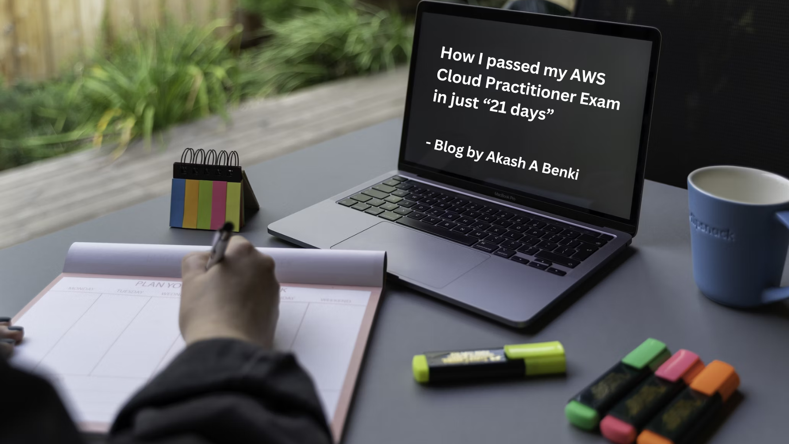

Home
Projects
Blogs
Lab
More
Cloud for Beginners | AWS Cloud Practitioner Essentials Course | Part-1
Nephophilia Diary
Cloud for Beginners | AWS Cloud Practitioner Essentials Course | Part-2
Nephophilia Diary
Cloud for Beginners | AWS Cloud Practitioner Essentials Course | Part-3
Nephophilia Diary
Cloud for Beginners | AWS Cloud Practitioner Essentials Course | Part-4
Nephophilia Diary
Cloud for Beginners | AWS Cloud Practitioner Essentials Course | Part-5
Nephophilia Diary
Cloud for Beginners | AWS Cloud Practitioner Essentials Course | Part-6
Nephophilia Diary

How I passed my AWS Cloud Practitioner Exam in just “21 days”
From Novice to Certified in Just 21 days (CLF-01)
“Insanely Good” by Swiggy Uses Amazon Web Services
An Exploratory Case Study
Divine Guidance: Embracing Krishna’s Wisdom in Modern Life
Krishna’s Lesson on No Expectations